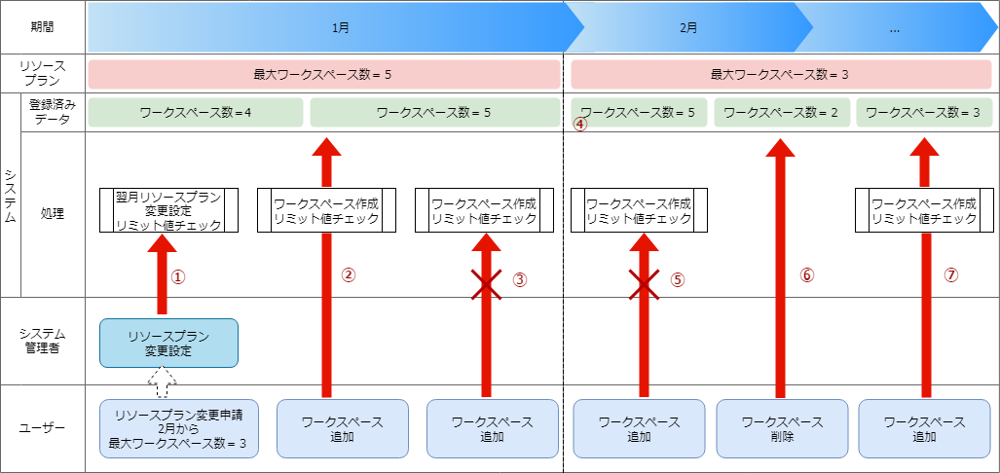

Example) Up until January, use Resource plan with max workspace number = 5. Then from February, use Resource plan with max workspace number = 3.

If a user asks to change the max amount to workspaces to 3, the system administrator will get a warning that the value will exceed the limit from February since the registered data says "Workspace number =4"
Since the registered data says "Workspace number = 4", the user will be able to add workspaces without exceeding the resource plan limit ("Workspace number =5").
Since the registered data says "Workspace number = 5", the user will not be able to add more workspaces since the Maximum Workspace number =5 (an error will occur).
The amount of workspaces will exceed the Maximum workspace number (3), but it will not restrict the user from using the system
Since the registered data says "Workspace number = 5",the user will not be able to add workspaces exceeding the resource plan's Maximum workspace number (3) (an error will occur).
Users can delete workspaces so the registered data changes from "Workspace number = 5" to "Workspace number = 2".
Since the Registered data says "Workspace number = 2", the user can create a new workspace since the resource plan's maximum workspace number is 3.
Move the fetched files to the tools folder and change the API execution destination URL within the Organization creation shell script to the System administrator's site address.
If the user is using a self-signed certificate, a certificate error will occur.
Changing the CURL_OPT=-sv within the setting file to CURL_OPT=-svk prevents the error from occuring, but it is recommended that the user installs a valid certificate.
注釈
These commands are not required the user is creating resource plans from the webUI.
There are 3 methods for confirming resource plan items.
There is no web UI for confirming resource plan items.
When creating resource plans, the items that requires configuration are displayed.
Follow the steps below
Confirm Resource plan setting items
Confirm the resource types (ID) that can be specified when creating resource plans.
Command
./get-plan-item-list.sh
Input information after executing command (input example)
yourusername:Systemadministrator's usernameyour password : System administrator'spassword
Results when process succeeds
"result": "000-00000" means that the process succeeded
<HTTP/1.1200OK
<Date:Fri,09Dec202206:58:26GMT
<Server:Apache/2.4.37(RedHatEnterpriseLinux)mod_wsgi/4.7.1Python/3.9
<Content-Length:451
<Content-Type:application/json
<
{[451bytesdata]
*Connection#0 to host platform-auth left intact{"data":[{"id":"ita.organization.ansible.execution_limit",
"informations":{"default":25,
"description":"Maximum number of movement executions for organization default",
"max":1000}},
{"id":"ita.organization.common.upload_file_size_limit",
"informations":{"default":104857600,
"description":"Maximum byte size of upload file for organization default",
"max":107374182400}},
{"id":"platform.roles",
"informations":{"default":1000,
"description":"Maximum number of roles for organization default",
"max":1000}},
{"id":"platform.users",
"informations":{"default":10000,
"description":"Maximum number of users for organization default",
"max":10000}},
{"id":"platform.workspaces",
"informations":{"default":100,
"description":"Maximum number of workspaces for organization default",
"max":1000}}],
"message":"SUCCESS",
"result":"000-00000",
"ts":"2022-12-09T06:58:26.764Z"}
Follow the steps below.
If directly calling RestAPI, the following contents can be called.
BASE64_BASIC=$(echo-n"Configure System admin user name:Configure system admin password"|base64)BASE_URL=Configuresystemadminsiteaddress.
curl-k-XGET\-H"Content-Type: application/json"\-H"Authorization: basic ${BASE64_BASIC}"\-d@-\"${BASE_URL}/api/platform/plan_items"
Can contain half-width alphanumeric cahracters, numbers, hypen and underscore (Max 36 letters)
※The ID must start with an uncapitalized alphanumeric letter
※The ID cannot match reserved phrases (More information further down).
name
Resource plan name
Max 255 letters
informations.description
Description
Max 255 letters
limits.xxxxxx.xxxxx
Configure the contents of the fetched resource plan items
Numeric value
Command
./add-plan.shadd-plan.json
Input information after executing command (input example)
yourusername:InputtheSystemadmin's usernameyour password : Input the System admin'spassword
Results when process succeeds
"result": "000-00000" means that the process succeeded
<HTTP/1.1200OK
<Date:Fri,09Dec202208:12:35GMT
<Server:Apache/2.4.37(RedHatEnterpriseLinux)mod_wsgi/4.7.1Python/3.9
<Content-Length:104
<Content-Type:application/json
<
{[104bytesdata]
*Connection#0 to host platform-auth left intact{"data":null,
"message":"SUCCESS",
"result":"000-00000",
"ts":"2022-12-09T08:12:36.219Z"}
Results when process fails
<HTTP/1.1400BADREQUEST
<Date:Fri,09Dec202208:16:09GMT
<Server:Apache/2.4.37(RedHatEnterpriseLinux)mod_wsgi/4.7.1Python/3.9
<Content-Length:265
<Connection:close
<Content-Type:application/json
<
{[265bytesdata]
*Closingconnection0{"data":null,
"message":"Could not create because the specified plan already exists",
"result":"400-27001",
"ts":"2022-12-09T08:16:09.830Z"}
Follow the steps below.
If directly calling RestAPI, the following contents can be called.
"ita.organization.ansible.execution_limit" is the max amount of Movements that can be executed by IT Automation's Ansible driver at once (per organization).
The max amount of executions that can happen simultaneously per organization depends on the configured settings. Note that the Exastro system also have a limit of how many executions can happen at once, so the absolute max limit will be the max value set to the system settings.
As a result, executing more Movements than the configured limit will start a queue and execute movements when there is space.
注釈
ita.organization.common.upload_file_size_limit
The ita.organization.common.upload_file_size_limit is the maximum size of files that can be uploaded to IT Automation (in bytes).
If directly calling RestAPI, the following contents can be called.
BASE64_BASIC=$(echo-n"Configure System admin user name:Configure system admin password"|base64)BASE_URL=Configuresystemadminsiteaddress.
curl-k-XGET\-H"Content-Type: application/json"\-H"Authorization: basic ${BASE64_BASIC}"\-d@-\"${BASE_URL}/api/platform/plans"
Tip
Curent resource plans cannot be edited or deleted.
Users can check the resource usage statuses for each organization (number of workspaces, users and roles).
There are 2 methods for checking resource usage statuses.
Tip
There is no Web UI for checking the usage statuses.
Use either "Script and setting file" or "Rest API".
Follow the steps below.
Check usage status per organization
Command
./get-usage-list.sh
Input information after executing command (input example)
organizationid:InputtheIDoftheorganizationthatwillbefetched(Ifleftblank,allorganizationswillbespecified)
yourusername:InputtheSystemadmin's usernameyour password : Input the System admin'spassword
Results when process succeeds
"result": "000-00000" means that the process succeeded
If directly calling RestAPI, the following contents can be called.
BASE64_BASIC=$(echo-n"Configure System admin user name:Configure system admin password"|base64)BASE_URL=Configuresystemadminsiteaddress.
ORG_ID=InputtheIDoftheorganizationthatwillbefetched.
curl-k-XGET\-H"Content-Type: application/json"\-H"Authorization: basic ${BASE64_BASIC}"\"${BASE_URL}/api/platform/usages?organization_id=${ORG_ID}"
注釈
In order to check the usage status for all organizations, do not specify "?organization_id=${ORG_ID}" and execute.

{kind=link}
{kind=link}
{kind=link}
{kind=link}